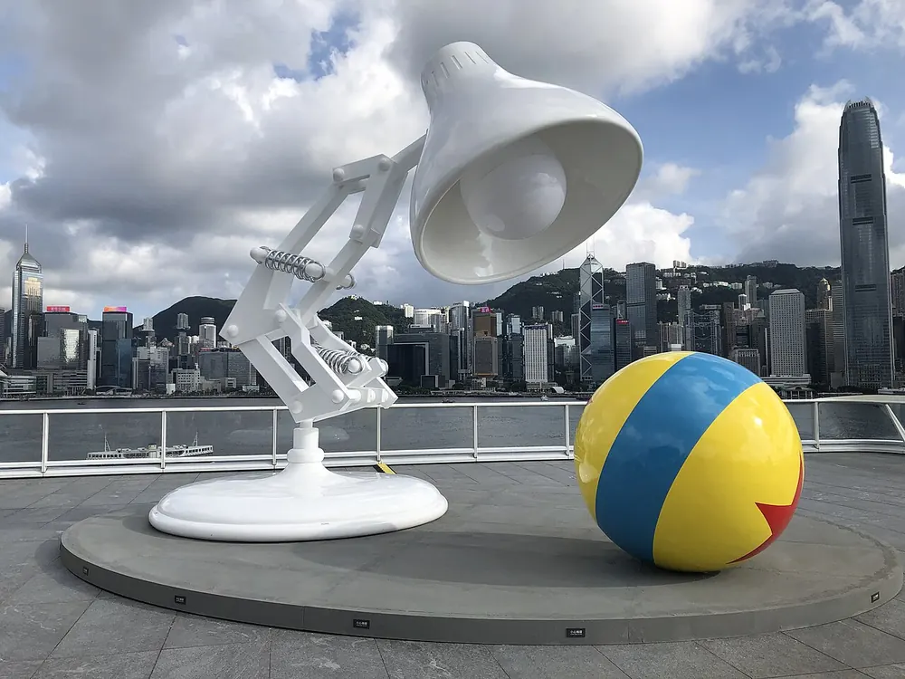
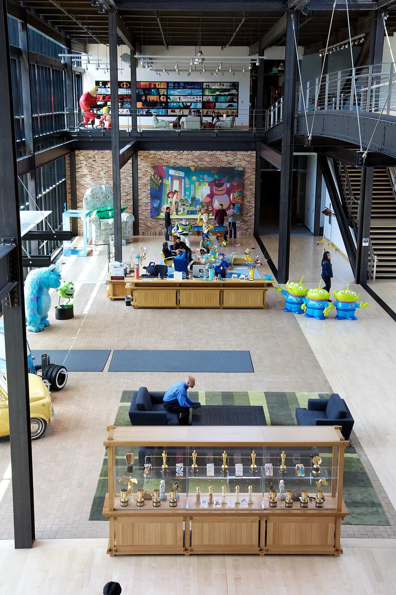

The claim
In 2013 the writer Jon Negroni published a post — later a book — arguing that all Pixar features share a single continuity. The spine of it:
- Animals gradually become intelligent (from Ratatouille and A Bug's Life toward Monsters, Inc. and Finding Nemo).
- Intelligent animals eventually leave or are displaced, and machines take over human society (WALL·E).
- Magic in the Brave era is the same force as the “scream energy” and door technology of Monsters, Inc.
- Boo, the child in Monsters, Inc., travels through doors in time and becomes the witch in Brave.
Supporting evidence: the recurring Easter eggs — the Pizza Planet truck, the A113 code, the ball from Luxo Jr., characters appearing in background shots. These are real and deliberately placed.
Why the Easter eggs are real but the theory is not a finding
The studio does place in-jokes across its films; animators have confirmed the truck and A113 for years. That establishes a shared production culture — the same people, the same running joke — not a shared fictional universe.
The theory works by selection. Any two films can be connected if you are allowed to pick the links after watching and ignore the ones that do not fit. Cars and The Incredibles sit awkwardly in the same world; the timelines in Brave and Monsters, Inc. require filling in mechanisms the films never show.
This is exactly the structure the archive criticises elsewhere — the difference is that Negroni is not claiming historical truth. It is an interpretive game, and a good one, judged on whether it is interesting rather than whether it is true.
Not a conspiracy theory, because nobody is accused of hiding anything, and no claim about the real world is made.
Not evidence, because the connections are chosen to fit. That is legitimate in literary criticism, where the question is “what reading does this support?”, and illegitimate in history, where the question is “what happened?”
The archive includes it because the boundary is worth seeing clearly. The same reasoning style — pattern, connection, satisfying whole — produces both this is a lovely way to watch these films and Tartaria, where the same move is made about real buildings and real people.
What makes it good criticism
It takes the films seriously as a body of work, notices that they share thematic preoccupations — intelligence, energy, consumption, the relationship between humans and other minds — and proposes that the studio's output can be read as one long argument. That is what good critics do with an oeuvre.
It also demonstrates something the archive keeps returning to: humans are pattern-completing machines, and a satisfying pattern is hard to tell apart from a true one. The Mandela Effect dossier is the same fact with worse consequences.
The same move, darker: the Rugrats theory
Another fan reading, from roughly 2011: the babies in Rugrats do not exist. Angelica, lonely and ignored by her parents, invented Tommy, Chuckie, Phil and Lil — and the series is her imagined company.
It has the same appeal as the Pixar Theory and the same method: take details that are funny in context (Angelica talking to babies who never talk to adults, the parents' distraction, the show's flexible reality) and re-read them as symptoms. The theory then requires the audience to ignore everything that contradicts it, which in a cartoon is most of the content.
Two differences matter. The Pixar Theory is affectionate and builds something; the Rugrats theory is a darkening, and it circulates mostly as a mood rather than an argument. And where the Pixar Theory at least rests on real production Easter eggs, this one rests on nothing but reinterpretation.
Nobody involved in making the show has endorsed it, and that is the honest status of every “secret dark theory” about a children's programme: authorship is evidence, and it points the other way.
Two more from the same factory
The SpongeBob seven deadly sins. A long-running fan reading assigns each main character a sin: Mr Krabs as greed, Patrick as sloth, Squidward as wrath, and so on. It is neat, it is fun, and it is unfalsifiable — with seven characters and seven sins, some assignment will always fit. The show's writers have never confirmed it, and the mapping changes depending on who is telling it.
The Ed, Edd n Eddy purgatory theory. A darker one: the children in the cul-de-sac are dead, trapped in purgatory, which supposedly explains their strange skin tones and the absence of adults. The skin tones are a stylistic choice; the absent adults are a convention of children's animation, so that the kids can have adventures without supervision. Both facts have production explanations, and the theory requires ignoring them.
The pattern across all three — Pixar, SpongeBob, Ed Edd n Eddy — is identical: take a real feature of the work (a recurring object, a colour palette, an absent authority) and re-read it as a hidden truth. It is a game, and a good one. It becomes a problem only when the game is presented as a discovery.
Sources for this page
- Jon Negroni, “The Pixar Theory” (2013, updated) — the original postjonnegroni.com
- Wikipedia, “The Pixar Theory” — summary and receptionen.wikipedia.org
- Pixar, “A113” and Easter eggs — studio confirmation of the running gagspixar.com
Open resources on this topic
- PapersOpen-access articles: DOAJ · PubMed Central · Internet Archive Scholar
- BooksPublic-domain and borrowable copies: Open Library · Project Gutenberg · Google Books · Internet Archive
More images

Luxo Jr in Pixar Fest Hong Kong 2021
Achanhk · CC BY-SA 4.0 · Commons
Pixar, Awards, Emeryville, 2010
Marcin Wichary · CC BY 2.0 · Commons


Cite this page
Momin, S. (2026). The Pixar Theory. The Larger World Archive. https://drsamonline.github.io/LARGE_GLOBE/pixar-theory.htmlMomin, Sohil. “The Pixar Theory.” The Larger World Archive, 2026, https://drsamonline.github.io/LARGE_GLOBE/pixar-theory.html.Momin, Sohil. “The Pixar Theory.” The Larger World Archive, 2026. https://drsamonline.github.io/LARGE_GLOBE/pixar-theory.html.@misc{the2026pixar,
author = {Momin, Sohil},
title = {The Pixar Theory},
year = {2026},
howpublished = {The Larger World Archive},
url = {https://drsamonline.github.io/LARGE_GLOBE/pixar-theory.html},
note = {Last reviewed 20 November 2026}
}Last reviewed 20 November 2026 · Corrections policy · this page is not peer reviewed